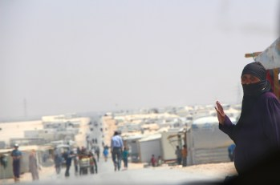
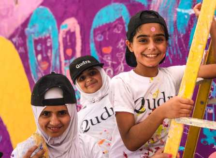
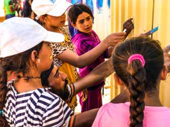
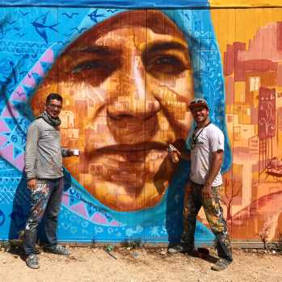
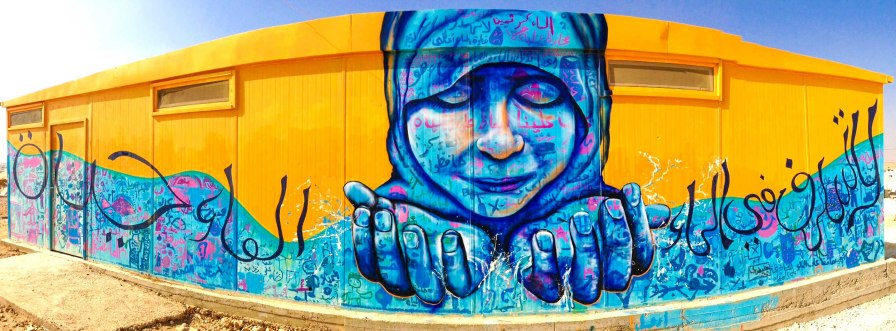

The Syrian Refugee Art Initiative

Transforming Lives Through Public Art

As the Syrian War rages on, desperate civilians continue to pour across the borders into neighboring countries. While they have escaped the death and destruction of war, many refugees now find themselves in desolate refugee camps across the region. Other refugees pack into towns and cities, straining services and resources, leading to strained tensions with local populations. Lives are on hold and official work is prohibited. While international humanitarian organizations scramble to provide food, shelter and medical care to refugees, other critical needs often fall through the cracks, such as educational and creative activities for youth to focus on, trauma relief and mentorship programs. There is a lack of arts and culture that enrich the human experience and no platform for refugee voices to reach out to the world to tell their own stories.

To address these issues, I’ve been traveling to Jordan since 2013 to facilitate mural arts projects with Syrian youth and their families. Through organization that I co-direct, Artolution, we’ve teamed up with Syrian artists and educators in the Za’atari and Azraq refugee camps. We lead discussion and art-making in which Syrians explore their longing to return to Syria, their dreams for the future, and their current plight as refugees. In host communities in Jordan, Syrian and Jordanian young people work on collaborative arts-based projects that focus on reducing tensions and promoting social cohesion between these two populations. Hundreds of children have had the opportunity to participate and add their own creativity to murals throughout the refugee camps and host communities, bringing color and life to a desolate environment and spreading messages of hope to local residents.

Mohammed Ibrahim working with students in Azraq Camp
Artolution supports Syrian refugee artists by providing capacity-building workshops and opportunities to work in their field and to engage the youth in their community. In Za’atari Camp, the Syrian artist collective Jasmine Necklace has co-facilitated community mural and sculpture projects. In Azraq Camp, an artist team led by Mohammed Hassan Ibrahim has engaged dozens of children and teens through public art, and is now developing an arts-based mentorship program with Artolution and the International Rescue Committee (IRC).

Me with Jokhadar (left) a local artist in Za’atari
It’s been an incredible experience for me to work with such resilient, warm individuals. The children we work with maintain their playful spark despite all the trauma and loss they’ve suffered. The adult artists and educators continue to strive to uplift their community, never giving up on their hope for a brighter future. I’m excited that my dream for setting up sustainable, ongoing arts-based programming in Syrian refugee communities, led by local artists, is now coming true thanks to our partner organizations who have the courage to believe in this initiative; thanks to everyone at the IRC, the Norwegian Refugee Council (NRC), GIZ, the European Union, UNICEF and UNHCR. In past projects, I’ve also partnered with the amazing aptART, ACTED and Mercy Corps. Last but not least, thanks to Max Frieder and everyone at Artolution, and all the local artists and the kids who made these murals come to life!
